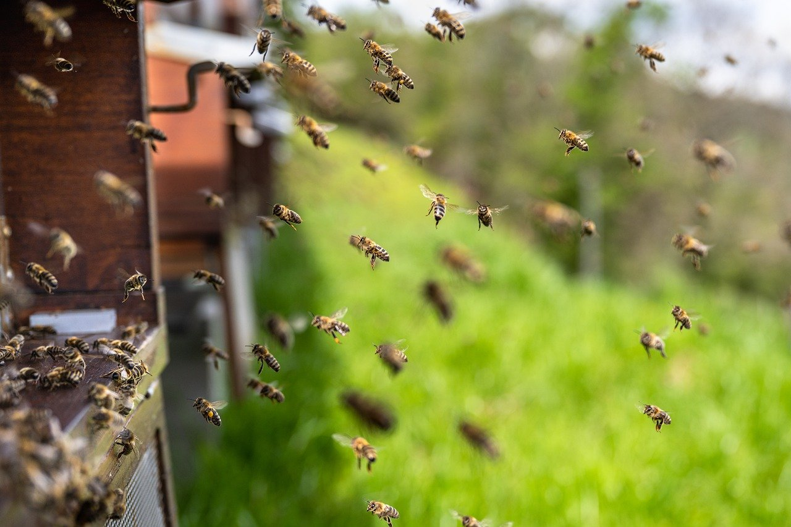
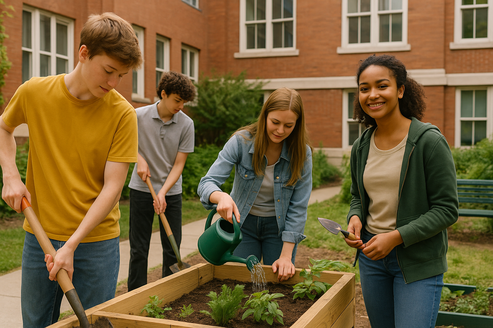

🪩💃Szent László Gimnázium - Tanulás és szórakozás egy helyen!✨🕺
Május 30-án este került sor a gimnázium év végi bulijára, ahol az iskola diákjai együtt ünnepelték a tanév végét. A tornatermet színes díszítés, lufik és fények töltötték meg, a zenéről stúdiósok gondoskodtak.
A “silent disco” sarok ebben az évben különösen népszerű lett. A diákönkormányzat által szervezett program során volt tánc és bőséges büfé is.
Az estig tartó buli jó hangulatú volt, a résztvevők pedig már most várják a jövő évi folytatást.
😯DARÁZSINVÁZIÓ A SZENT LÁSZLÓBAN?! 🐝
Teljes pánik tört ki a Szent László Gimnázium udvarán, amikor egy darázsraj csapott le az ebédszünet közepén. Valaki állítólag méhkaptárt rakott a tetőre egy bioszprojekt miatt, de a „László bosszúja” néven elhíresült raj kicsit túltolta.
A biosztanár hősiesen próbálta menteni a helyzetet - egészen addig, amíg meg nem csípte egy példány. Azóta mindenki fél tőlük. Az ebéd aznap mézes-mustáros csirke volt. Véletlen? Nem hinném.

🌱 DIÁKOK ÚJÍTJÁK MEG AZ UDVAR EGY RÉSZÉT - KÖZÖS KERTPROJEKT INDUL A SZENT LÁSZLÓBAN
Növények, padok és egy kis nyugalom: a diákok új szintre emelik az iskolai udvart.
A diákok közösen, és elindították a „Zöld Sarok” projektet, amelynek célja, hogy az iskola egyik elhanyagolt udvari részét barátságos közösségi térré alakítsák.
Készülőben:
-
emelt ágyások fűszernövényekkel 🌿
-
újrafestett padok 🎨
-
diákok által tervezett kis pihenőzóna 🛋️
Az ötlet egy földrajzórán jött, amikor a diákok a városi zöldterületekről tanultak, és felmerült: „Mi lenne, ha nálunk is lenne egy ilyen hely?”
Az iskola vezetősége még virágföldet és szerszámokat is biztosított, így jövőre akár „Zöld Mentor Programot” is indítanak.
Egy diák szerint:
„Nem csak jó érzés, hogy csinálunk valamit - de közben barátkozunk, nevetünk, meg közben kicsit elfelejtjük, hogy holnap bioszdoga van.”

🖥️Szintet lépett az infódoga - sajnos nem mi🤷♂️
Kisebb zűrzavar volt a a múlt pénteki informatika dolgozat miatt, ugyanis a tanár véletlenül rossz fájlt töltött fel a dolgozathoz használt felületre. A feladatok között voltak 11.-es szintű anyagk is, amit az NyF osztály természetesen nem tanult még. Az elején sokan jelezték, hogy "ez biztos valami tévedés", de mivel a tanár épp technikai problémákkal küzdött a gépén, csak később derült ki, hogy összekeverte a fájlokat. A dolgozatot elhalasztották a következő hétre. A diákok szerint „szokatlanul stresszes” volt a helyzet, de azért örülnek, hogy újraírhatják - immár a saját szintjükön.
📰 Új élet a régi polcokon - megújult a Szent László Gimnázium könyvtára📚
Látványos átalakuláson ment keresztül a Szent László Gimnázium könyvtára: friss festés, új bútorok, digitális kölcsönzőrendszer - és egy kis relax-kuckó is.
A diákok először csak óvatosan tértek vissza, de a „puha fotelek” és a „kortárs polc” gyorsan népszerűek lettek.
„Külön polc van csak a diákok ajánlásai alapján válogatott könyvekből - ez szerintem zseniális” - mondta egy tanuló.
A fejlesztést egy pályázati támogatásnak köszönhetően sikerült megvalósítani. Az iskolavezetés szerint céljuk egy nyitottabb, inspirálóbb tér létrehozása volt, ahol az olvasás nem csak kötelező, hanem öröm is lehet. A könyvtár hivatalos újranyitóján rögtönzött felolvasások és könyvcserék is zajlottak - Egy cetlin egy üzenetet hagyott ott valaki: „Ez már nem csak könyvtár. Ez menedék.”